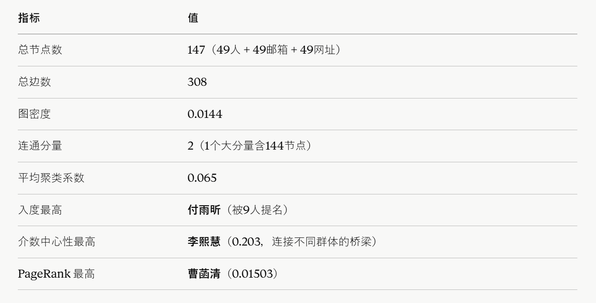

社会网络图

点击下方按钮查看高清PDF版本：
查看PDF
本实验以班级同学之间的联系数据为研究对象， 利用社会网络分析方法构建全班同学有向社会网络图， 并对网络结构进行分析和可视化展示。 实验开始前，首先对原始数据进行整理与预处理， 检查数据完整性并统一格式。 针对姓名、电子邮箱以及个人网址等信息进行规范化处理， 删除空值与重复记录， 保证后续分析结果的准确性。 随后将整理后的数据转换为Gephi可识别的数据格式， 分别生成节点表与边表。
在网络构建阶段， 将每位同学的姓名设置为源节点， 其电子邮箱、个人网址以及填写的五位联络人设置为目标节点。 为了体现信息关联方向， 所有边均设置为有向边。 同时根据节点类别设置不同颜色， 姓名节点采用紫色， 邮箱节点采用蓝色， 网址节点采用绿色， 从而能够清晰区分不同类型的信息实体。 网络导入Gephi后， 利用ForceAtlas2布局算法进行自动排布， 使联系紧密的节点聚集在一起， 形成更加直观的网络结构。
完成网络构建后， 进一步利用Gephi统计网络结构指标， 包括节点数、边数、平均度数、 网络密度、平均路径长度、 模块度以及中心性指标等。 通过这些指标可以分析班级成员之间的联系情况， 发现网络中的核心节点、 关键桥梁节点以及潜在社群结构。 实验结果表明， 社会网络分析不仅能够有效展示复杂关系数据， 还能够帮助研究者从整体视角理解群体内部的组织结构与互动模式。
本实验主要使用Excel完成数据清洗与整理， 使用CSV格式完成数据交换， 使用Gephi完成社会网络构建、 布局优化以及指标分析。 通过本次实验， 进一步掌握了社会网络分析的基本流程， 加深了对网络可视化和关系数据分析方法的理解， 同时提高了利用数字工具进行知识组织与信息分析的实践能力。